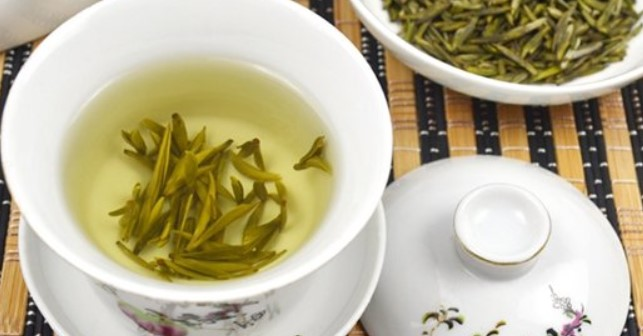

远安黄茶
远安黄茶，湖北省远安县特产，全国农产品地理标志。远安黄茶生产地域地形地貌为山地、丘陵、河谷冲积平原兼而有之，土壤质地较好，砂粘合理，酸碱度适中。适合黄茶生长，外形条索环状，色泽金黄，汤色黄净明亮，香气神异且持久清香。
产品特点
远安黄茶属黄茶类，外形条索环状（俗称环子脚），白毫显露，色泽金黄（略带鱼子泡），汤色黄净明亮，香气神异且持久清香，嘬之生津，滋味醇厚甘凉绵长，叶底嫩黄匀整。远安黄茶内在品质典型特性突出，茶多酚≥15%、咖啡碱（以干基计）≥2.5%、游离氨基酸≥2%。
产地环境
远安黄茶生产地域地形地貌为山地、丘陵、河谷冲积平原兼而有之，西北部山地占总面积的 38.6%，东部丘陵占总面积的38%，中部河谷冲积平原占总面积的23 .4%。远安黄茶种植区域在海拔800米以下，区域内山亘连绵，云雾缭绕，溪流纵横交错，茶园错落其间，且远离城镇、村民生活区、工业园区及交通要道，隔离条件好，产地自然生态环境独特，无污染。
历史渊源
嫘祖故里湖北远安茶叶种植历史悠久，被誉为“陆羽《茶经》第一县”，是全国著名的黄茶产区。独特的丹霞地貌孕育出独赋异禀的远安黄茶。以鹿苑茶为代表的远安黄茶有近800年历史，以其幽兰之香、色美味醇等鲜明特征多次被评为“全国名茶”。
1966年，远安黄茶采摘、制作、贮藏等工艺被安徽农学院编入全国高等农业院校试用教材《制茶学》一书，1985年再度入编《中国名茶研究选集》，致使悠久而丰厚底蕴的远安黄茶人文文化与自然文化得以传承和发扬。
生产情况
2012年，黄茶繁衍进入鼎盛，成为远安县的支柱产业之一。现茶园面积达28665亩，其中采摘面积20310亩，总产量1302吨，产值达到2.5亿元。
产品荣誉
2013年6月，远安黄茶系列产品之一的“南荆湾”-“南荆黄芽”和“南荆毛尖”等以其独特的远安黄茶品质展示于“中国三峡第三届茶文化艺术节”，赢得众多专家学者、客商和消费者的青睐；同年5月，荣获第六届“湖北企业社会责任最具创新力企业奖”。
2017年9月1日，原中华人民共和国农业部批准对“远安黄茶”实施国家农产品地理标志登记保护。